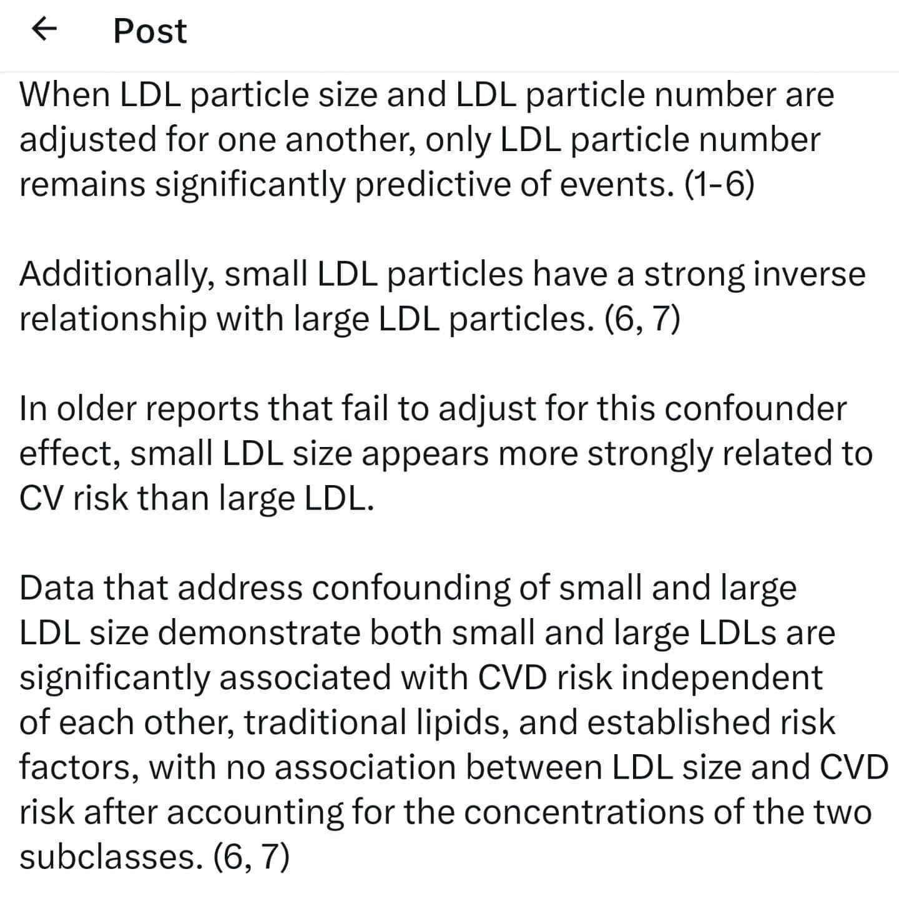
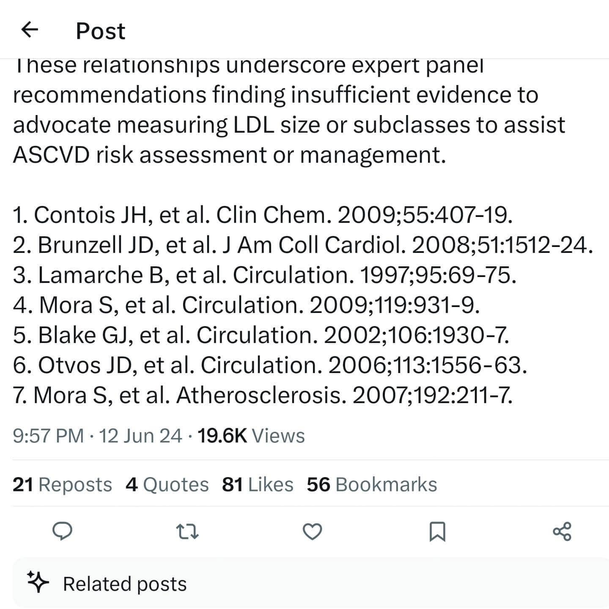

(no text — see the shared post below)
Does LDL particle size matter?
The answer is, probably not much.
Older studies that failed to address for confounding showed that LDL particle size is inversely associated with risk.
Smaller and more dense particles appeared riskier, while larger “fluffier” particles appeared safer. The theory was that the smaller particles could more easily enter the arterial wall and oxidize, making them more dangerous.
Newer studies that properly adjust for confounding show that this is not really true.
We now know that the larger “fluffier” particles can also get inside the arterial wall, and carry a much larger cholesterol payload which compensates for the fact that less get in.
Lipidologist William Cromwell MD explains this in more detail in the text below.
#particlesizeHD #cromwellHD


